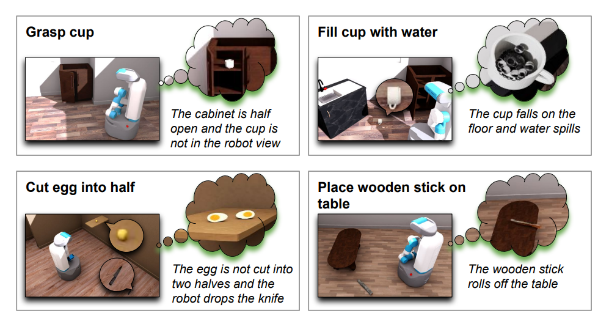
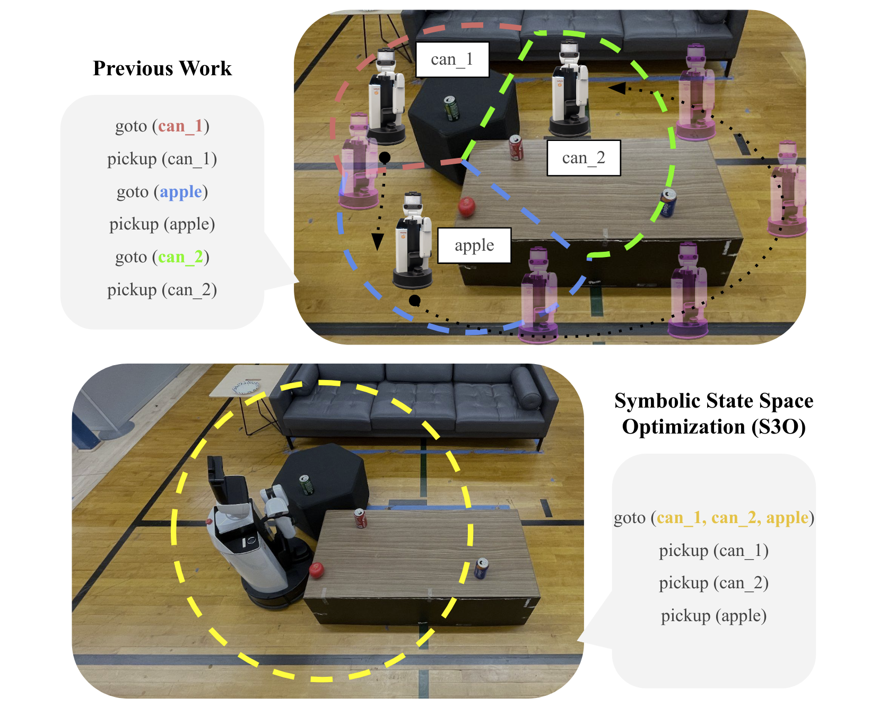

|
Xiaohan Zhang I am currently a robotics researcher at Boston Dynamics AI Institute. I completed my PhD in Computer Science at the State University of New York at Binghamton, advised by Shiqi Zhang. In the summer and fall of 2023, I was a Research Scientist Intern in the Embodied AI team at Meta AI (FAIR) working with Chris Paxton. In the spring of 2023, I spent time visiting the Learning Agents Research Group (LARG) at the University of Texas at Austin, supervised by Peter Stone. In the summer of 2022, I was a Student Researcher with the Robotics team at Google DeepMind. I obtained my bachelor's degree from Renmin University of China in 2019. |

|
ResearchMy research is at the intersection of robotics, machine learning, and computer vision. I develop learning and planning algorithms that enable autonomous robots to perform service tasks in complex environments. Here are topics I am interested in: 1) Foundation models for long-horizon decision making; 2) Task and motion planning for mobile manipulation; 3) Language grounding with multi-modal perception. |
|
 |
DKPROMPT: Domain Knowledge Prompting Vision-Language
Models for
Open-World Planning
Xiaohan Zhang, Zainab Altaweel*, Yohei Hayamizu*, Yan Ding, Saeid Amiri, Hao Yang, Andy Kaminski, Chad Esselink, Shiqi Zhang CVPR EAI Workshop, 2024 project page / arXiv |
|
OpenEQA: Embodied Question Answering in the Era of
Foundation Models
Arjun Majumdar*, Anurag Ajay*, Xiaohan Zhang*, et al. IEEE/CVF Conference on Computer Vision and Pattern Recognition (CVPR), 2024 project page / blog |
|
 |
Symbolic State Space Optimization for Long Horizon
Mobile Manipulation Planning
Xiaohan Zhang, Yifeng Zhu, Yan Ding, Yuqian Jiang, Yuke Zhu, Peter Stone, and Shiqi Zhang IEEE/RSJ International Conference on Intelligent Robots and Systems (IROS), 2023 project page |

|
Task and Motion Planning with Large Language Models for
Object Rearrangement
Yan Ding*, Xiaohan Zhang*, Chris Paxton, and Shiqi Zhang (*Equal Contribution) IEEE/RSJ International Conference on Intelligent Robots and Systems (IROS), 2023 project page |

|
Multimodal Embodied Attribute Learning by Robots for
Object-Centric Action Policies
Xiaohan Zhang, Saeid Amiri, Jivko Sinapov, Jesse Thomason, Peter Stone, and Shiqi Zhang Autonomous Robots, 2023 project page / Springer Nature Official |

|
Visually Grounded Task and Motion Planning for Mobile
Manipulation
Xiaohan Zhang, Yifeng Zhu, Yan Ding, Yuke Zhu, Peter Stone, and Shiqi Zhang IEEE International Conference on Robotics and Automation (ICRA), 2022 project page |
|
Website template stolen from here. |